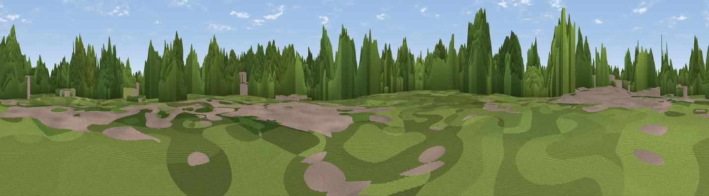

Harefield
#41596 in England · top 69% of its area beats it · near West EndWhere it is
The exact computed spot (SU 46850 13867). Click the marker for map links.
The view, rendered

A 360° render of this exact spot computed from the terrain model, tree cover and land cover — summer colours, afternoon light, calibrated against photographs of famous viewpoints. Real trees, hedges and buildings will differ in detail.
The panorama
Grey silhouette: terrain skyline in each direction (720 bearings, Earth curvature and refraction included). Dashed green: skyline with trees (+15 m) and buildings (+8 m) as obstacles. Blue strip: how far the ground is visible on each bearing.
Where the view opens
Wedge length = distance to the farthest visible ground on that bearing (vegetation-aware). Rings at 10, 25 and 50 km.
What fills the view
56% woodland · 24% grassland · 14% built-up · 5% cropland · 1% water
Angular shares of the visible panorama (visual magnitude), not map area. Landscape diversity 0.50 (0–1 Shannon).
Key numbers
More beautiful places nearby
The staircase of upgrades: each row has a higher view potential than everything closer. Driving times are estimates from straight-line distance, calibrated against real road routing — check an actual route before setting out.
| Place | Direction | Drive | Score |
|---|---|---|---|
| Viewpoint near West End | WNW · 1 km | ~2 min | 24.1 |
| Viewpoint near West End | WNW · 2 km | ~6 min | 24.9 |
| Viewpoint near Lower Swanwick | SE · 4 km | ~9 min | 28.1 |
| Winters Hill | ENE · 7 km | ~14 min | 33.7 |
| Viewpoint near Upham | NE · 11 km | ~20 min | 43.6 |
| Viewpoint near Upham | NE · 11 km | ~21 min | 44.2 |
| Viewpoint near Droxford | ENE · 13 km | ~24 min | 58.5 |
| Cheesefoot Head | NNE · 15 km | ~27 min | 61.0 |
50.92237, -1.33484 · source: dobih hill · position refined by local search. Computed location — check access rights before visiting.